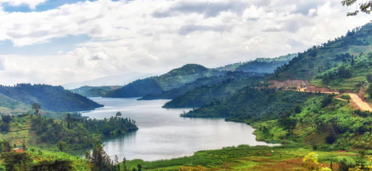
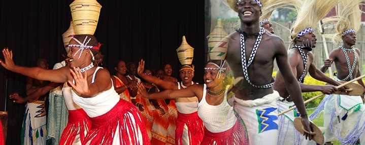
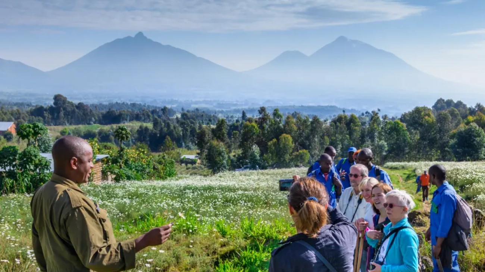

About Rwanda
Introduction to Rwanda
Nestled in the heart of Africa, Rwanda is a country of breathtaking landscapes, rich culture, and warm hospitality. Known as the "Land of a Thousand Hills," Rwanda offers visitors a unique blend of natural beauty and vibrant traditions.
Rwanda's history is marked by resilience and growth, with key historical events shaping its present-day identity. The country's diverse geography includes mountains, lakes, forests, and savannahs, making it a paradise for nature lovers.
Culture & Heritage
Rwanda's culture is deeply rooted in its traditions, with music, dance, and crafts playing a significant role. The country is multilingual, with Kinyarwanda, French, and English being widely spoken. Rwandan cuisine is a delightful experience, featuring dishes made from local ingredients. Major cultural festivals and events are celebrated throughout the year, showcasing the vibrant heritage of Rwanda.
Sustainable Tourism
Rwanda is committed to promoting sustainable tourism practices that benefit both the environment and local communities. Visitors can engage in eco-friendly activities and support initiatives that preserve the country's natural beauty and cultural heritage. Community-based tourism projects empower local communities and provide authentic cultural experiences. Wildlife conservation efforts, including the protection of endangered species like mountain gorillas, are a key focus in Rwanda.
Testimonials
"Rwanda is a hidden gem in Africa. The landscapes are stunning, and the people are incredibly welcoming. My visit to Volcanoes National Park was an unforgettable experience."
- Jane Doe
"The cultural festivals in Rwanda are a must-see. The traditional music and dance performances are mesmerizing. I felt truly immersed in the local culture."
- John Smith
About Go Trip
Go Trip is a premier travel company dedicated to providing exceptional travel experiences in Rwanda. Our mission is to showcase the beauty and culture of Rwanda to the world, offering personalized and unforgettable tours.
Founded by HIRWA Fabrice, Go Trip has grown to become a trusted name in the tourism industry. Our team of experienced professionals is passionate about creating unique and immersive travel experiences for our clients.
At Go Trip, we believe in sustainable tourism practices that benefit both the environment and local communities. We are committed to promoting eco-friendly activities and supporting initiatives that preserve Rwanda's natural beauty and cultural heritage.
Our Services

Guided Tours
Customized and group tours of popular destinations like Volcanoes National Park, Akagera National Park, Nyungwe Forest, and Lake Kivu.
Specialized eco-tours to explore Rwanda’s wildlife, such as gorilla trekking, bird-watching, and safari tours.

Cultural Experiences
Visits to cultural sites like the Kigali Genocide Memorial and local villages.
Traditional Rwandan music and dance performances, cooking classes, and craft workshops.

Adventure Activities
Hiking and trekking excursions, including mountain hikes in the Virunga Range.
Water sports on Lake Kivu, such as kayaking, fishing, and boat cruises.

Transportation Services
Airport transfers, in-country transportation, and private car rentals for flexibility and comfort.
Shuttle services to various tourist destinations around Rwanda.

Accommodation Bookings
Partnerships with local hotels, lodges, and guesthouses to offer a range of accommodations to suit different budgets and preferences.
Eco-lodges and community-based accommodation options for an authentic experience.

Sustainable Tourism Initiatives
Opportunities to participate in community-based tourism, allowing guests to contribute to local development.
Support for wildlife and environmental conservation programs, including reforestation projects and animal conservation efforts.

Event Planning
Arrangements for private events such as destination weddings, corporate retreats, and special gatherings in scenic locations.